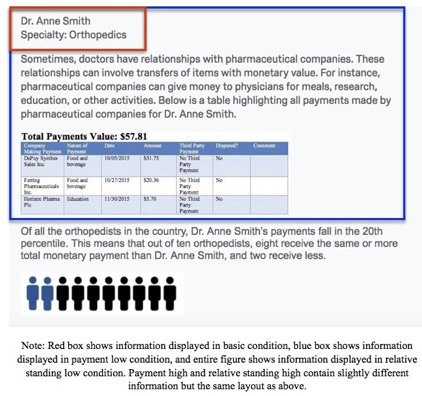
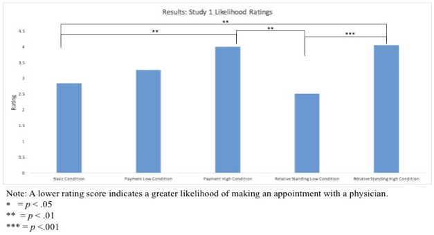

Physician Conflict of Interest Disclosure: A Step Towards Improved Decision Making?
Writer: Katie Mehr
Date: Spring 2017
Citation: Mehr, K., Boyce-Jacino, C., & Chapman, G. (2017). Physician Conflict of Interest Disclosure: A Step Towards Improved Decision Making? Rutgers Research Review, 2(1).
My name is Katie Mehr and I am a a member of the Class of 2018. I am pursuing a major in Economics and minors in Mathematics and Statistics. I am interested in learning about how people make decisions and how to improve such choices. My current advisors are Dr. Gretchen Chapman and Ph.D. student Christina Boyce-Jacino. My goal is to attend a Ph.D. program in marketing or behavioral decision research, so that I can learn more about consumer behavior and decision making.
In this study, I investigate the impact of physician conflict of interest disclosure and its impact on patient decision making. With the intent of increasing transparency in healthcare, the Physician Payments Sunshine Act (PPSA) requires pharmaceutical companies to report any transfer of value to physicians or teaching hospitals, including meals, speaking fees, and more (Richardson, 2014). All payment information is kept online in the Open Payments database, which includes payment information from approximately 618,000 physicians ("The Facts About Open Payments Data", n.d.).
The purported purpose of publicly displaying this data is to allow patients to make informed decisions about which provider to visit and promote transparency ("PPSA Final Rule", 2013). As a part of this goal, the Open Payments database merely presents the data on a physician's payments in a table, leaving the interpretation of this information up to the reader, who is likely a patient. Additionally, no information is given about how a physician's payments compare to others within that specialty, which I denote as relative standing information. Because this relative standing information is likely to make a different in patient perceptions of a physician, I have included it, along with total annual payments to a physician, as an independent variable in this study. The impact of these two variables will be determined by two measures: the patient's perception of doctor bias; the patient's likelihood rating of making an appointment with the physician.

Figure 1: Here is an example of the stimuli presented to subjects. The red box highlights information seen by subjects in the basic condition, while the blue box shows information from the payment low condition. The entire figure corresponds to the stimulus for the relative standing low condition. Conditions with high payments presented a different payment table to subjects and, for the relative standing high condition, a visual corresponding to the eightieth percentile as supposed to the twentieth.

Figure 2: This figure shows the results of the likelihood rating question for each condition. Please note that a higher rating corresponds to a lower chance of making an appointment with the orthopedist.

Figure 3: This figure shows the results of the bias rating question for each condition. Please note that a higher rating corresponds to a higher perception that the doctor is biased.
Because adults of all ages, rather than only college students, need to make decisions about health care providers, this study was run with subjects from Amazon Mechanical Turk, an online marketplace for social science experiments with a diverse population. We utilized a between-subjects design and randomly allocated each subject to one of five conditions: 2 (payment information: high vs. low) x 2 (relative standing: relative high vs. relative low) + 1 (basic information). All subjects were told that they had fallen down a flight of stairs and now need to find an orthopedist. After this initial introduction, subjects were randomly allocated to one of the five conditions, all of which showed information about a potential orthopedist which they could visit. Depending upon the condition, subjects saw different information. For instance, the basic condition showed only the physician name and specialty, whereas payment conditions included a table with payment information. The relative standing condition added upon the payment condition, as it also included a graphic to depict the rank of the doctor's payments. Payment and relative standing conditions were divided into either a low of high level of payments, corresponding to the twentieth and eightieth percentile respectively. Refer to Figure 1 for a visual example of conditions.
All participants answered two questions, both of which are used as dependent variables: "How likely are you to make an appointment with this healthcare provider?"" and "How confident or skeptical are you that this physician will provide you with unbiased care?." After viewing the payment information, subjects in all conditions except basic were given two bonus questions about the payment table. Each question correct yielded a five cent bonus, therefore incentivizing participants to peruse the payment table.
Analysis of the resulting data with an ANOVA found a statistical difference between conditions for both the likelihood question and unbiasedness question (likelihood: F(4, 196) = 7.85, p = .000; unbiasedness: F(4, 196) = 8.41, p = .000). This result suggests that participants were differentially likely to make an appointment with a doctor and perceived that doctor's bias based on their condition. Subsequent Tukey pairwise comparison tests found that there was a statistically significant difference between the pairs as indicated in Figures 2 and 3 by starred brackets. Also, a 2x2 ANOVA found a significant interaction between payment level and relative standing information in both dependent variables (likelihood: F(2, 198) = 3.59, p = .030; unbiasedness: F(2, 198) = 3.71, p = .026). This suggests that relative standing information only affects likelihood and perceptions of bias when payment information is low.
Because there was so little information provided with which they could obtain an opinion, subjects in the basic condition provided a slightly favorable rating of the physician. The only other condition which had ratings similar to the basic condition on both questions, therefore rendering the same statistically significant pairs as the basic condition, was relative standing low. Payment low resulted in ratings that were in between the basic and relative standing high conditions, and thus it is not statistically different from any other condition. Although payments low and relative standing low show a physician with the same payment information, the lack of context in the payment low condition causes subjects to rate the physician less favorably than in relative standing low. Thus, the context information for physicians with low payments provided in the relative standing low condition is necessary for subjects to understand the importance of these payments. Furthermore, as predicted, those subjects in the conditions which saw high payments deduced that they were less likely to see the physician and thought she was biased. However, payment high and relative standing high have very similar perceptions, showing that context information may not be as important if a physician has higher payments. Lastly, payment high and basic showed differences between responses for the unbiasedness question and the likelihood question. Thus, for those in the payment high condition, the amount of biasedness may not have a large impact on the decision of whether to make an appointment with a physician, compared to the other conditions.
This study has revealed important findings regarding the impact of physician payments on patient decision making. First, relative standing information, which gives the payments context for social comparison, is important when viewing physicians with low payments, but not those with higher payments. Second, subjects who see both low payments and low percentile ranking view the physician in the same light as if the subjects only saw the doctor's name and specialty. These findings could be applied to the current Open Payments database. For instance, if the Open Payments database were to include relative standing information, patients would have more information, and doctors would not be negatively affected. Those physicians with low payments would be received more positively by patients with such information present and those with high payments would see no change in patient perceptions. Future research on this topic will address whether effort of obtaining information will change perceptions of physicians and what the expected level of physician payments is for the general public.
References
- Physician Payment Sunshine Act Final Rule: Reporting Requirements - Policy and Medicine (2013, February 7). Retrieved March 27, 2017, from http://www.policymed.com/2013/02/physician-payment-sunshine-act-final-rule-reporting-requirements.html
- Richardson, E. (2014, October 2). The Physician Payments Sunshine Act. New regulations require medical product manufacturers to publicly report payments made to physicians and teaching hospitals. Health Affairs, 1-6. Retrieved September 22, 2016.
- The Facts About Open Payments Data. (n.d.). Retrieved September 23, 2016.